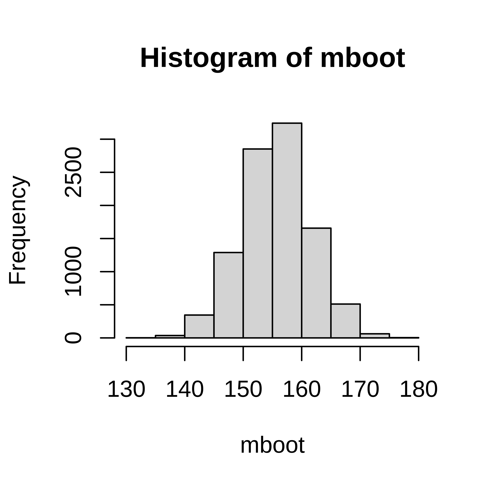

Exercises: Interval estimates
Exercise 3.1 You measure the Hb value in 10 50-year old men and get the following observations; 145, 165, 134, 167, 158, 176, 156, 189, 143, 123 g/L.
- Compute a 95% bootstrap interval for the mean Hb value.
- Compute the sample mean Hb value
- Compute the sample variance
- Compute the sample standard deviation
- Assume that Hb is normally distributed and compute a 95% confidence interval for the mean Hb value.
Exercise 3.2 In the pollen example we calculated a 95% confidence interval.
- How can we get a narrower confidence interval?
- We computed a 95% interval, what if we want a 90% confidence interval?
- or a 99% confidence interval?
Exercise 3.3 A scale has a normally distributed error with mean 0 and standard deviation 2.3 g. You measure a sample 10 times and observe the mean weight 43 g.
- Compute a 95% confidence interval of the sample weight
- Compute a 90% confidence interval of the sample weight
3.3 Solutions
obs <- c(145, 165, 134, 167, 158, 176, 156, 189, 143, 123)
mboot <- replicate(10000, {
x <- sample(obs, size=10, replace=TRUE)
mean(x)
})
hist(mboot)
## 05% confidence interval
quantile(mboot, c(0.025, 0.975))## 2.5% 97.5%
## 143.9 167.2(m <- mean(obs))## [1] 155.6(v <- var(obs))## [1] 395.2(s <- sd(obs))## [1] 19.88- Assume that Hb is normally distributed and compute a 95% confidence interval for the mean Hb value.
n <- length(obs)
t <- qt(0.975, df=9)
##95% confidence interval
c(m - t*s/sqrt(n), m + t*s/sqrt(n))## [1] 141.4 169.8Calculate a 90% confidence interval instead. Or sample more people than 100.
Change the z number,
\[p \pm z * SE\]
For a 90% confidence interval use z=1.64
p <- 0.42
n <- 100
SE <- sqrt(p*(1-p)/n)
z <- qnorm(0.95)
c(p - z*SE, p + z*SE)## [1] 0.3388 0.5012- or a 99% confidence interval?
z <- qnorm(0.995)
c(p - z*SE, p + z*SE)## [1] 0.2929 0.5471@(ref:CIscale)
The measured weight is a random variable \(X \sim N(\mu, \sigma)\). You know that \(\sigma = 2.3\), \(\mu\) is the weight of the smaple.
- Compute a 95% confidence interval of the sample weight
## 95% ciónfidence interval
m <- 42
sigma <- 2.3
n <- 10
z <- qnorm(0.975)
c(m - z*sigma/sqrt(10), m + z*sigma/sqrt(10))## [1] 40.57 43.43- Compute a 90% confidence interval of the sample weight
z <- qnorm(0.95)
c(m - z*sigma/sqrt(10), m + z*sigma/sqrt(10))## [1] 40.8 43.2@(ref:BMCsmokers)
You observe 150 students at BMC of which 25 are smokers. Compute a 95% confidence interval for the proportion of smokers among BMC students.
p <- 25/150
n <- 150
z <-qnorm(0.975)
SE <- sqrt(p*(1-p)/n)
## 95% CI
c(p - z*SE, p + z*SE)## [1] 0.1070 0.2263